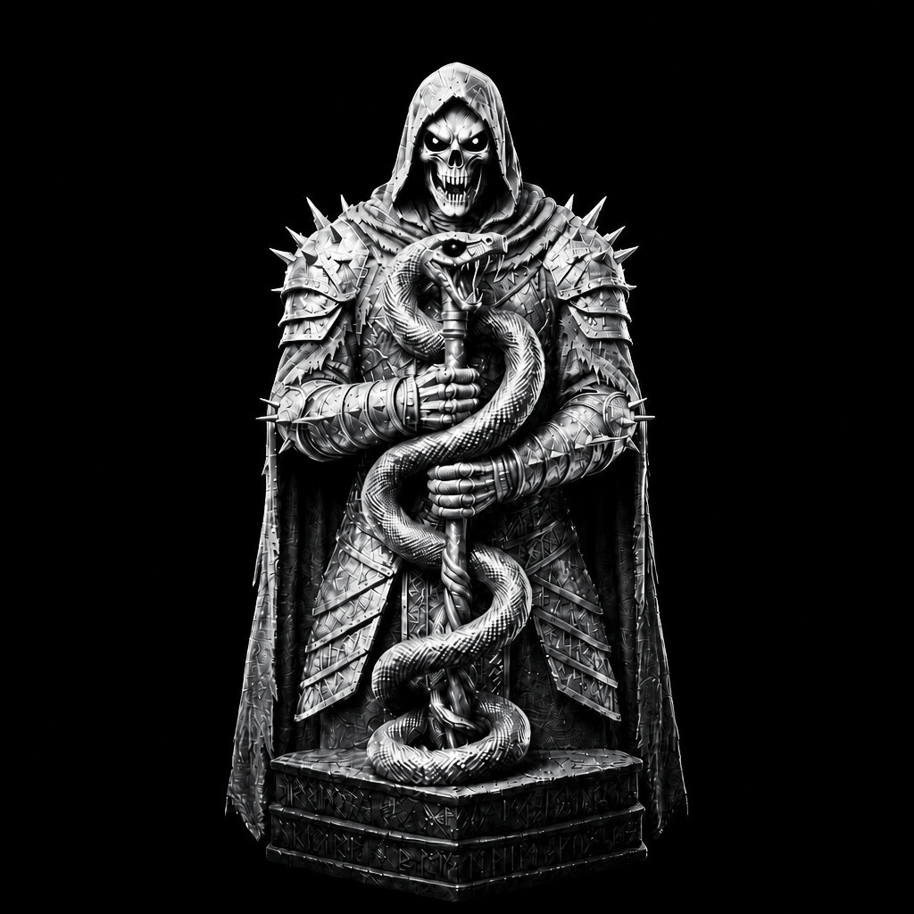

Before the realm carried a name, there was only the will to create it.
01
HONOR
The first law of the domain. A name without honor carries no weight beneath the seal.

A legendary Lair beyond the common realms, founded upon honor, loyalty, strength and legacy.
ASTWIHĀD is not merely a name.
It is a domain with its own identity, its own order, and its own ancient law. A hidden Lair standing apart from ordinary realms, where every name carries weight and every bond becomes part of the greater record.
Its walls are not measured by stone. They are measured by those who stood behind them. Its strength is not displayed through noise, but preserved through discipline, loyalty and will.
Within ASTWIHĀD, reputation is earned, allegiance is remembered, and legacy is carried from one age to another.
The first law of the domain. A name without honor carries no weight beneath the seal.
The bond that preserves the realm. Those who remain become part of its history.
Not the strength of noise, but the strength to stand when the age turns against you.
What remains after the banners fall, the crowns disappear, and the centuries move on.
Beyond the outer gates lies the inner domain.
A closed circle bound not by empty titles, but by presence, loyalty and shared legacy.
Every voice within the Lair carries its own history. Every name becomes part of the record. Every bond adds another layer to the foundation.
THE DOMAIN REMEMBERS THOSE WHO REMAIN.
Before the realm carried a name, there was only the will to create it.
The first mark became a seal. The seal became a domain. The domain became ASTWIHĀD.
What began as one vision became a realm carried forward by those who earned their place within it.
The gates remain. The record continues. The seal remains unbroken.
The creator stands at the origin of the domain; the first will behind its foundation, the name behind its seal, and the hand that gave the Lair its identity.
Courage in character. Pride in origin. Discipline in word. Resolve in action.
From that will came the first foundation. From that foundation came the Lair.
ENTER CREATOR PROFILE →Names are recorded. Words are preserved. Deeds become history.
THE LAIR REMAINS.
THE RECORD CONTINUES.
THE SEAL ENDURES.